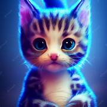
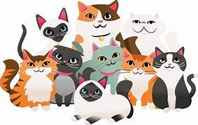
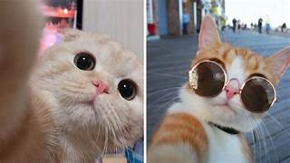

Feliz miercoles.
Los gatos son animales fascinantes y misteriosos que han sido compañeros de los humanos durante miles de años. Son conocidos por su independencia, curiosidad y habilidades de caza. A menudo se les considera mascotas ideales debido a su naturaleza juguetona y su capacidad para adaptarse a diferentes entornos.
Dato curioso: ¿Sabías que los gatos pueden hacer saltos hasta seis veces la longitud de su cuerpo? Esto se debe a sus potentes músculos de las patas traseras, lo que les permite cazar y escapar de los depredadores con facilidad.